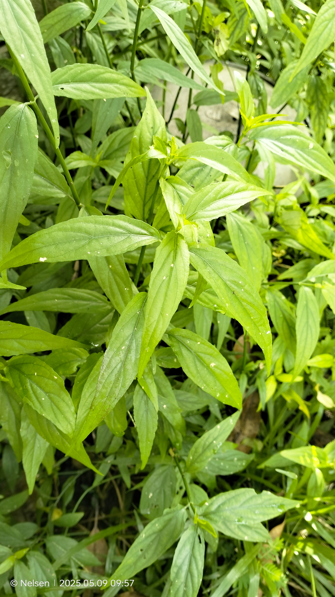
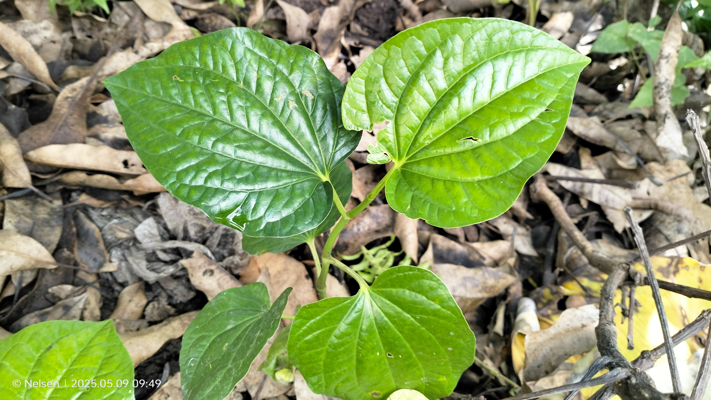
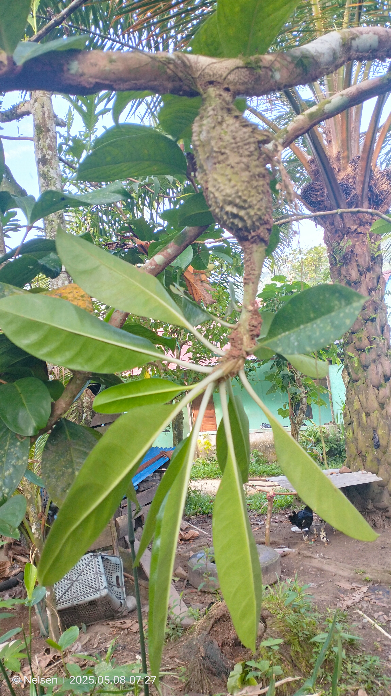

Produk Herbal

Gendang Gendis
Mengobati ruam, luka herpes, gigitan ular, diabetes, dan asam urat.

Sirih Karuk
Meredakan sakit perut dan gangguan pencernaan.

Tumbuhan Sarang Semut
Meningkatkan imun dan mempercepat penyembuhan luka.
Hubungi Kami
Pesan produk atau konsultasi herbal langsung lewat WhatsApp:
Chat via WhatsApp